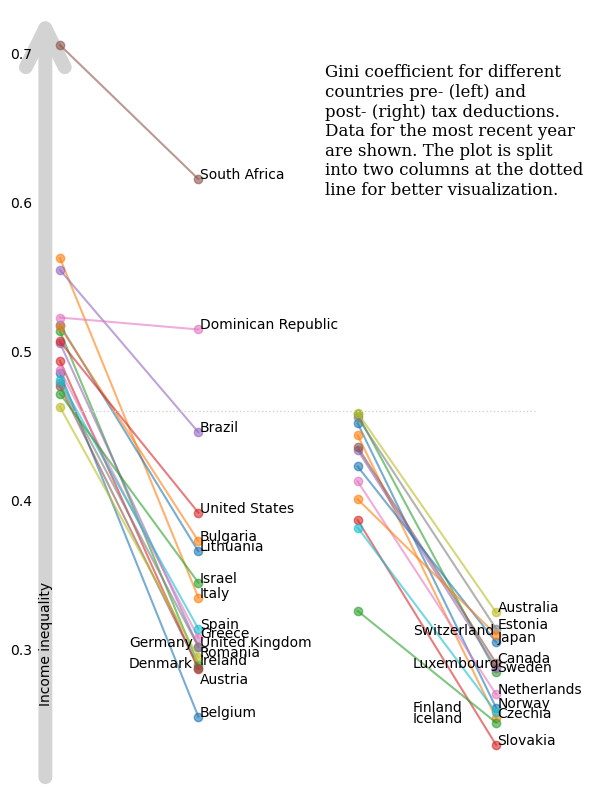

import pandas as pd
import matplotlib.pyplot as plt
from matplotlib.lines import Line2D
import textwrapTidyTuesday dataset of 2025-08-05
income_inequality_processed = pd.read_csv('https://raw.githubusercontent.com/rfordatascience/tidytuesday/main/data/2025/2025-08-05/income_inequality_processed.csv')
income_inequality_raw = pd.read_csv('https://raw.githubusercontent.com/rfordatascience/tidytuesday/main/data/2025/2025-08-05/income_inequality_raw.csv')income_inequality_processed| Entity | Code | Year | gini_mi_eq | gini_dhi_eq | |
|---|---|---|---|---|---|
| 0 | Australia | AUS | 1989 | 0.431 | 0.304 |
| 1 | Australia | AUS | 1995 | 0.470 | 0.311 |
| 2 | Australia | AUS | 2001 | 0.481 | 0.320 |
| 3 | Australia | AUS | 2003 | 0.469 | 0.316 |
| 4 | Australia | AUS | 2004 | 0.467 | 0.316 |
| ... | ... | ... | ... | ... | ... |
| 942 | Vietnam | VNM | 2005 | NaN | 0.369 |
| 943 | Vietnam | VNM | 2007 | NaN | 0.401 |
| 944 | Vietnam | VNM | 2009 | NaN | 0.398 |
| 945 | Vietnam | VNM | 2011 | NaN | 0.364 |
| 946 | Vietnam | VNM | 2013 | NaN | 0.350 |
947 rows × 5 columns
income_inequality_raw| Entity | Code | Year | gini_disposable__age_total | gini_market__age_total | population_historical | owid_region | |
|---|---|---|---|---|---|---|---|
| 0 | Afghanistan | AFG | -10000 | NaN | NaN | 14737.0 | NaN |
| 1 | Afghanistan | AFG | -9000 | NaN | NaN | 20405.0 | NaN |
| 2 | Afghanistan | AFG | -8000 | NaN | NaN | 28253.0 | NaN |
| 3 | Afghanistan | AFG | -7000 | NaN | NaN | 39120.0 | NaN |
| 4 | Afghanistan | AFG | -6000 | NaN | NaN | 54166.0 | NaN |
| ... | ... | ... | ... | ... | ... | ... | ... |
| 58920 | Zimbabwe | ZWE | 2019 | NaN | NaN | 15271330.0 | NaN |
| 58921 | Zimbabwe | ZWE | 2020 | NaN | NaN | 15526837.0 | NaN |
| 58922 | Zimbabwe | ZWE | 2021 | NaN | NaN | 15797165.0 | NaN |
| 58923 | Zimbabwe | ZWE | 2022 | NaN | NaN | 16069010.0 | NaN |
| 58924 | Zimbabwe | ZWE | 2023 | NaN | NaN | 16340778.0 | Africa |
58925 rows × 7 columns
income_inequality_processed_noNA = income_inequality_processed.dropna(subset=['gini_mi_eq'])
income_inequality_processed_noNA['diff'] = income_inequality_processed_noNA['gini_mi_eq'] - income_inequality_processed_noNA['gini_dhi_eq']
df1 = income_inequality_processed_noNA.sort_values('Year').groupby('Entity').last()
df1 = df1.sort_values('diff', ascending=False)
df1| Code | Year | gini_mi_eq | gini_dhi_eq | diff | |
|---|---|---|---|---|---|
| Entity | |||||
| Belgium | BEL | 2021 | 0.486 | 0.255 | 0.231 |
| Italy | ITA | 2020 | 0.563 | 0.335 | 0.228 |
| Ireland | IRL | 2021 | 0.514 | 0.290 | 0.224 |
| Austria | AUT | 2022 | 0.494 | 0.287 | 0.207 |
| Germany | DEU | 2020 | 0.506 | 0.302 | 0.204 |
| Norway | NOR | 2004 | 0.452 | 0.261 | 0.191 |
| Czechia | CZE | 2016 | 0.444 | 0.254 | 0.190 |
| Denmark | DNK | 2022 | 0.477 | 0.288 | 0.189 |
| Greece | GRC | 2021 | 0.488 | 0.308 | 0.180 |
| United Kingdom | GBR | 2021 | 0.479 | 0.302 | 0.177 |
| Sweden | SWE | 2021 | 0.458 | 0.285 | 0.173 |
| Romania | ROU | 2021 | 0.463 | 0.295 | 0.168 |
| Spain | ESP | 2022 | 0.481 | 0.314 | 0.167 |
| Lithuania | LTU | 2021 | 0.518 | 0.366 | 0.152 |
| Slovakia | SVK | 2018 | 0.387 | 0.236 | 0.151 |
| Luxembourg | LUX | 2021 | 0.434 | 0.288 | 0.146 |
| Canada | CAN | 2021 | 0.436 | 0.291 | 0.145 |
| Bulgaria | BGR | 2022 | 0.517 | 0.373 | 0.144 |
| Netherlands | NLD | 2021 | 0.413 | 0.270 | 0.143 |
| Estonia | EST | 2016 | 0.456 | 0.314 | 0.142 |
| Australia | AUS | 2020 | 0.459 | 0.325 | 0.134 |
| Israel | ISR | 2021 | 0.472 | 0.345 | 0.127 |
| Finland | FIN | 2016 | 0.382 | 0.258 | 0.124 |
| Japan | JPN | 2020 | 0.423 | 0.305 | 0.118 |
| United States | USA | 2023 | 0.507 | 0.392 | 0.115 |
| Brazil | BRA | 2015 | 0.555 | 0.446 | 0.109 |
| Switzerland | CHE | 2019 | 0.401 | 0.310 | 0.091 |
| South Africa | ZAF | 2017 | 0.706 | 0.616 | 0.090 |
| Iceland | ISL | 2017 | 0.326 | 0.251 | 0.075 |
| Dominican Republic | DOM | 2007 | 0.523 | 0.515 | 0.008 |
Plotting
cutoff = 0.460
set1 = df1[df1['gini_mi_eq']>=cutoff]
set2 = df1[df1['gini_mi_eq']<cutoff]x = [0,1]
categories1 = sorted(set(set1['gini_mi_eq']).union(set(set1['gini_dhi_eq'])))
categories2 = sorted(set(set2['gini_mi_eq']).union(set(set2['gini_dhi_eq'])))
categories = categories1 + categories2
fig, (ax1,ax2) = plt.subplots(1,2,figsize=(6, 8),sharey=True)
for ind, (row_ind, row) in enumerate(set1.iterrows()):
ax1.plot(x, [row['gini_mi_eq'], row['gini_dhi_eq']], marker='o', label=row_ind, alpha=0.6)
if (row_ind in ['Germany', 'Denmark']):
ax1.annotate(row_ind, (0.5, row['gini_dhi_eq']))
elif (row_ind in ['Austria']):
ax1.annotate(row_ind, (1.01, row['gini_dhi_eq']-0.01))
else:
ax1.annotate(row_ind, (1.01, row['gini_dhi_eq']))
for ind, (row_ind, row) in enumerate(set2.iterrows()):
ax2.plot(x, [row['gini_mi_eq'], row['gini_dhi_eq']], marker='o', label=row_ind, alpha=0.6)
if (row_ind in ['Switzerland', 'Luxembourg', 'Finland', 'Iceland']):
ax2.annotate(row_ind, (0.4, row['gini_dhi_eq']))
else:
ax2.annotate(row_ind, (1.01, row['gini_dhi_eq']))
ax1.spines[['top', 'right', 'bottom', 'left']].set_visible(False)
ax2.spines[['top', 'right', 'bottom', 'left']].set_visible(False)
ax1.set_xticks([])
ax2.set_xticks([])
ax1.tick_params(axis='y', pad=15)
ax1.tick_params(axis='y', length=0)
ax2.tick_params(axis='y', length=0)
#ax1.set_ylabel(r'Income inequality $\longrightarrow\!\!\!\!\!\!>$', fontsize=12)
title_text = textwrap.fill("Gini coefficient for different countries pre- (left) and post- (right) tax deductions. Data for the most recent year are shown. The plot is split into two columns at the dotted line for better visualization.",30)
fig.text(x=.55,y=.75,s=title_text, fontsize=12, fontfamily='Serif')
ax1.annotate(
'',
xy=(-0.05, 1), xycoords='axes fraction',
xytext=(-0.05, 0), textcoords='axes fraction',
arrowprops=dict(arrowstyle='->', lw=10, mutation_scale=70, color='lightgrey'),
zorder=-1
)
ax1.annotate(
'Income inequality',
xy=(-0.09, 1), xycoords='axes fraction',
xytext=(-0.09, 0.10), textcoords='axes fraction',
rotation=90
)
plt.tight_layout()
y_display = ax1.transData.transform((0, cutoff))[1]
y_fig = fig.transFigure.inverted().transform((0, y_display))[1]
# Add horizontal line across the figure at the data-level cutoff
line = Line2D([0.125, 0.9], [y_fig, y_fig], # X in figure coords, Y is now in figure coords too
transform=fig.transFigure,
color='lightgrey', linewidth=1, linestyle='dotted')
fig.add_artist(line)
#plt.savefig("income_inequality.png", dpi=300)
plt.show()